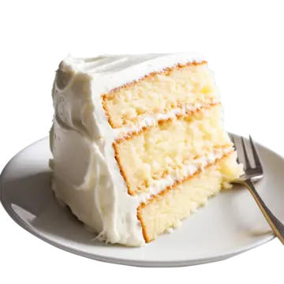

Return Home
Prep Time: 20 minutes
Cook Time: 30 minutes
Servings: 8-10
Ingredients
- 2 1/2 cups all-purpose flour
- 2 1/2 tsp baking powder
- 1/2 tsp salt
- 1 cup unsalted butter, softened
- 1 3/4 cups granulated sugar
- 4 large eggs
- 1 tbsp pure vanilla extract
- 1 cup whole milk
Instructions
- Preheat the oven to 350°F (175°C). Grease and flour two 9-inch round cake pans.
- Mix dry ingredients: In a medium bowl, whisk together flour, baking powder, and salt.
- Cream butter and sugar: In a large bowl, beat butter and sugar together until light and fluffy (about 3-5 minutes).
- Add eggs and vanilla: Beat in the eggs one at a time, then stir in vanilla extract.
- Combine wet and dry: Gradually add the flour mixture, alternating with milk, beginning and ending with the flour mixture. Mix until just combined.
- Pour and bake: Divide batter evenly between the prepared pans and smooth the tops. Bake for 25-30 minutes or until a toothpick inserted into the center comes out clean.
- Cool: Let the cakes cool in the pans for 10 minutes, then transfer to wire racks to cool completely before frosting.
Simple Vanilla Buttercream Frosting
- 1 cup unsalted butter, softened
- 3-4 cups powdered sugar, sifted
- 2 tsp vanilla extract
- 2-3 tbsp heavy cream or milk
- Pinch of salt
Directions: Beat butter until creamy. Gradually add powdered sugar, vanilla, and cream, beating until fluffy. Spread evenly over the cooled cake layers.

Tips for the Perfect Cake
- Ensure all ingredients are at room temperature for better mixing.
- Do not over-mix the batter to keep the cake light and fluffy.
- Use parchment paper to avoid the cake sticking to the pan.